2021 Holiday Web Page

| Erich and Margie's 2021 Holiday Web Page | |
January After paying no tax in 2019, Erich got a letter from the IRS saying he might be eligible for a refund. We finished watching all 6 seasons of "Hogan's Heroes". Margie found 3 golf balls in our yard. Erich shaved half his beard. Our refrigerator needed a new thermostat. Erich watched season 1 of "Good Girls".
February We watched the South Florida Folk Festival online. Erich watched seasons 2 and 3 of "Good Girls". We had a whip-poor-will visit our back yard. Margie got her second vaccine shot.
March When John and Dawn visited for the day, we had BBQ at Lake Beresford Park, and did some trivia. Erich finally watched "Queen's Gambit". We had a nice dinner at the Branton's place.
April Margie celebrated a birthday with Missy and Barbara, the taste of new food, the sound of birds, and the fragrance of jasmine. Margie found a tree in our yard attacked by woodpeckers. Erich got his second vaccine shot. Margie saw a barred owl at our water dish. We spent a day with Margie's cousin Curt, whom she had not seen in 40 years. Erich was laid low by his second vaccine shot. Margie celebrated Earth Day by picking up almost 2 miles of trash. The IRS didn't agree that Erich should pay $0 in tax for 2019... so they sent him a check for $72. Erich got thousands of calories in birthday packages, so thanks to you know who! Erich published a note in the American Mathematical Monthly. We celebrated Erich's actual birthday in an actual Indian restaurant.
May A possum came to our water dish. Erich bought Margie a sign related to two of her favorite things. Our clothes washer, which was more than 40 years old, finally needed to be replaced. In addition to Erich's weekly backgammon game with Bill, he played a few times with Rob as well.
June We got to see Dan and Ranjini's condo on the beach when they hosted us for dinner. We celebrated Missy's birthday with Mexican takeout and games. A family of raccoons came to our water dish. We had the trees hanging over our roof trimmed back. We attended a games party at the Dunn's. Erich followed his dental hygienist to a new dentist.
July Erich's college buddy John and his girlfriend Dawn visited us again. And then the next wave of covid hit.
August Erich watched about 50 hours of Olympics, mostly net sports but also water polo, climbing, and archery. Pancho preferred the sport of laying around doggie day care. Puzzle friends Andrea and Matthieu turned some of my static puzzles into interactive puzzles. (birds, rolling blocks, tilt mazes, pent mazes, more pent mazes, piratesm robots, or thunderball) Then some guy named Pedro started doing the same, and you can see his porting of my puzzles here.
September Erich managed to accidentally rip off one of our kitchen cabinet doors, but it was nothing that superglue wouldn't fix. We went to a weekend of Sing Out Loud in St. Augustine, hearing some of our favorite musicians like Sam Pacetti, Dewey Via, and Amy Hendrickson. Pancho made a new friend on the Stetson campus.
October One of our neighbors went all out for decorating for Halloween. We had Chick-fil-A delivered to our front door, but we didn't order any. We had a nice dinner with the Dunns on their porch. As the covid rates finally fell, we restarted trivia nights. And the Elusive Grape started using my trivia again, which was good for our wine collection.
November We had our driveway redone. We went to the Barberville folk music festival, and especially enjoyed Remedy Tree. For a change, we did Thanksgiving with Joan and some other friends.
Erich's holiday puzzles can be found here. You can see our archive of our previous holiday web pages here.


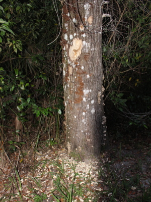 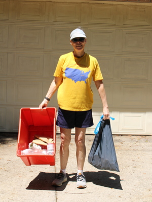 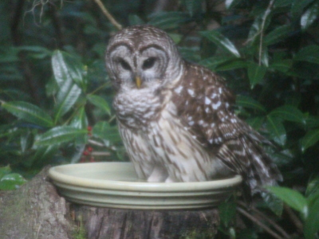 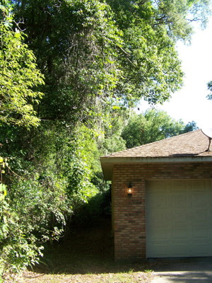 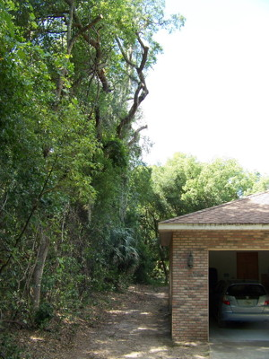 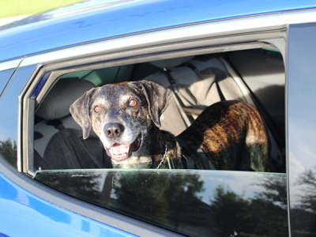 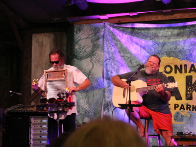 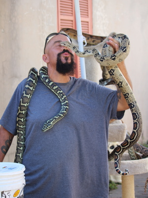 
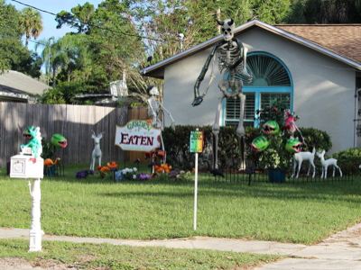 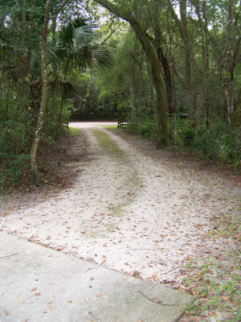 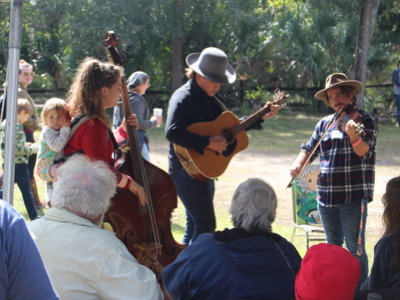